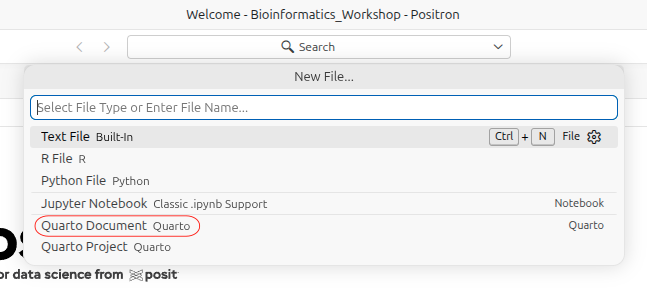
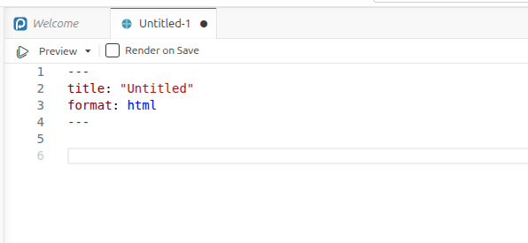
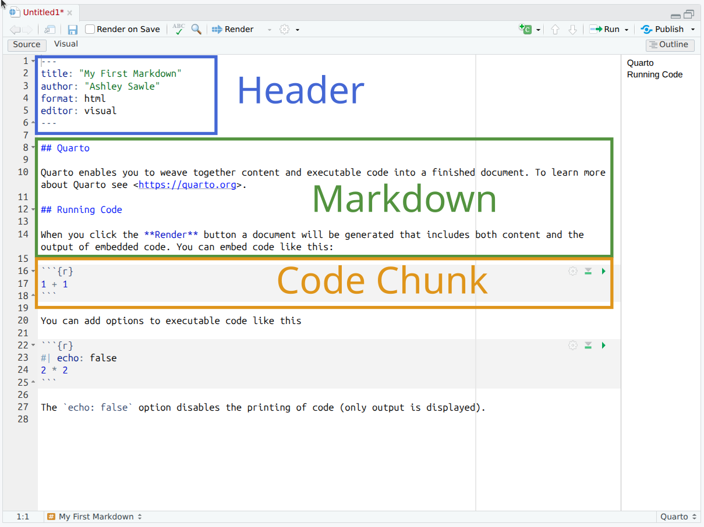
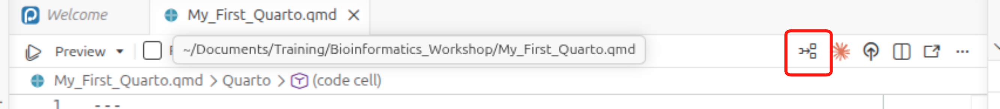
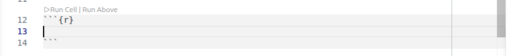
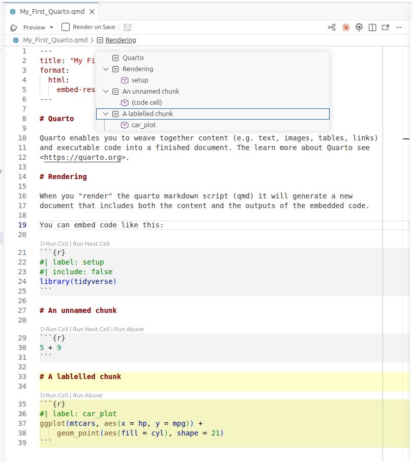
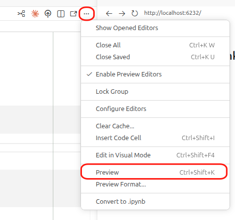
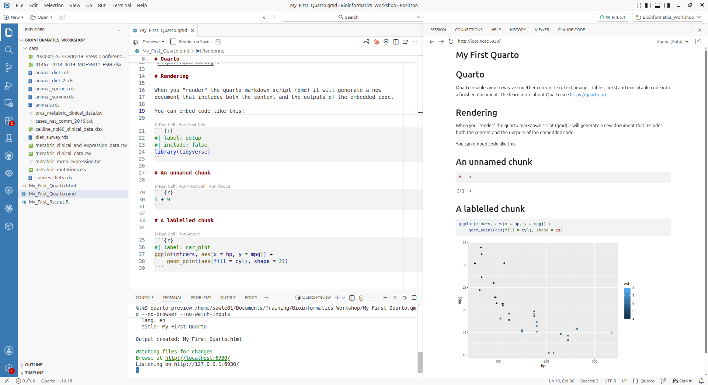

library(tidyverse)
library(knitr)
library(kableExtra)
library(DT)
library(patchwork)Session 8 – Quarto
NoteLearning objectives
- Learn how to generate an html/pdf report using Quarto and Positron
- Write formatted text, tables, links and images using Markdown
- Embed executable R code in a document and control how its output appears
- Present tables and figures in a report using knitr, kableExtra, DT and patchwork
What is Quarto?
Quarto is an open-source scientific and technical publishing system that provides a means of combining executable R code, code output and textual content in a single document. These documents can then be used to create reports in a variety of different formats, such as PDF, HTML, Word, or even slide decks. Quarto is developed by Posit, and it supports R, Python, Julia and Observable JavaScript out of the box.
This session will provide a brief introduction to Quarto, including how to create a new Quarto document, how to add text and images, how to insert R code chunks, and how to render the document to create a report.
More detailed materials can be found here.
Packages for this session
We will be using the following packages in this session. If you don’t have them installed, you can do so using the install.packages() function.
knitr is the package that Quarto uses, when working with R, to run your code chunks and convert your document to various output formats. It is also used to control how the output of R code is rendered in the document, and its kable function is used to create simple tables. Note that you don’t need to load the knitr package explicitly for chunks to run, as Quarto loads it for you, but if you want to use the kable function you may wish to load it in order not to have to type knitr::kable() every time.
The kableExtra package extends the functionality of knitr, providing additional functions for formatting tables. The DT package provides a way to create interactive tables in Quarto documents. The patchwork package provides a way to combine multiple ggplots into a single figure.
Creating a Quarto document
We can start a new Quarto document in Positronfrom the menu bar:
File –> New File
Then select Quarto Document from the list of options.

This will create a new script file:

Change the title to something meaningful and then save the file as “My_First_Quarto.qmd” in the Bioinformatics_Workshop directory. Quarto documents use the .qmd extension.
The basic components of a Quarto document
A Quarto file is made up of 3 components:
- Header - metadata and instructions related to rendering the document
- Markdown sections - Text, images, links, tables, lists to be included in the report
- Code chunks - Code chunks to be executed and the output included in the report

Header
The Quarto document starts with a header in YAML format.
The header begins and ends with a line with three hyphens (---). The only required field is the format field, which defines what type of document is to be created. Other fields either define metadata, e.g. author or title, or they contain information related to the rendering of the output document, e.g. whether to include a table of contents or not (we’ll look at this later).
In the example below the title, author, format and date have been specified
---
title: "My First Quarto Document"
author: "Ashley Sawle"
format: html
date: "2026-08-21"
---Common alternatives to html in the format field include pdf, docx and revealjs (for slides).
Markdown sections
Markdown is a markup language that allows you to add formatting to text, such as bold or italics. Unlike in a word processor such as MS Word, the effect of formatting is not visible in a markdown (.md) document, only once the document is rendered to create the output. Markdown uses specific syntax to add formats to the text. The benefit of this is Markdown is lightweight and platform independent.
Quarto combines normal Markdown for text and images with separate chunks that can contain executable R code, the outputs of which can be included in the document.
The full documentation of the Markdown syntax used in Quarto can be found here. Here we will concentrate on the most commonly used elements.
Inline text formatting
Seeing as we have already mentioned bold and italics, let’s see how they work. To apply inline formatting for text, we simply surround the text we want to format with a particular set of symbols. For example to render some text in italics we surround the text with either asterisks or underscores:
This is *italics* or This is _italics_ → This is italics
Other possible inline formatting syntax includes:
Double asterisks/underscores for bold:
This **is bold**orThis __is bold__→ This is boldTilde (
~) for subscript:This is ~subscript~→ This is subscriptCaret (
^) for superscript:This is ^superscript^→ This is superscriptDouble tilde (
~) for strikethrough:~~This is strikethrough~~→This is strikethroughBackticks (
`) for “code” font:This is `code`→ This iscode
Note that any amount of text can come between the two sets of syntax.
Headings
Section headings are created using the # symbol (technically called an octothorp!) at the beginning of the line. The top level is the document title and uses one #:
# Section
Using 2 creates a section header:
## Sub-section → Sub-section
Increasing the number of # symbols creates deeper and deeper levels of sub-sections.
# Section
# Sub-section
## Sub-sub section
### Sub-sub-sub section
#### Sub-sub-sub-sub sectionAdding a table of contents
The section headers can be automatically added to a table of contents. As this is “instructions related to rendering the document”, we need to add this information to the header yaml:
format:
html:
toc: trueBy default all headings up to level 3 headings are displayed in the table of contents. You can adjust this by specifying toc-depth. With html format, the table of contents defaults to a “floating” position on the right of the document body. You can change its location with toc-location:
format:
html:
toc: true
toc-depth: 4
toc-location: leftNote that Quarto option names use hyphens rather than underscores, e.g. toc-depth, not toc_depth.
Tab sets
A neat thing to do is to create tab sets. In Quarto, tab sets are created using a fenced div with the class .panel-tabset. Each sub-heading inside the div becomes a tab. For example:
::: {.panel-tabset}
### Bold
Bold is achieved with double asterisks e.g. `**bold**` is rendered as **bold**.
### Italics
Italics is achieved with a single asterisk e.g. `*italics*` is rendered as *italics*.
### Strikethrough
Strikethrough is achieved with two tildes e.g. `~~strikethrough~~` is rendered as
~~Strikethrough~~.
:::
### Next section
The tab set ends when the div is closed.is rendered as:
Bold is achieved with double asterisks e.g. **bold** is rendered as bold.
Italics is achieved with a single asterisk e.g. *italics* is rendered as italics.
Strikethrough is achieved with two tildes e.g. ~~strikethrough~~ is rendered as Strikethrough.
Next section
The tab set ends when the div is closed.
NOTE: The border and background colour have been added in order to differentiate the output rendered from the markdown above from the main text of this document. This is not part of the default output.
Line breaks
Two consecutive lines of body text in the Quarto document will be read as the same paragraph and concatenated. To insert a line break between two lines either add two (or more) spaces or a backslash at the end of the first line. For example:
This is the first line
There are no spaces after the end of the previous lineis rendered as:
This is the first line There are no spaces after the end of the previous line
where as:
This is the first line\
There are no spaces after the end of the previous lineis rendered as:
This is the first line
There are no spaces after the end of the previous line
Lists
We can create both unordered lists (bullet points) or ordered lists (numbered).
Unordered lists
To create an unordered list using *, - or + (all do the same thing). You can created nested lists by indenting by 4 spaces.
* Cricket
* Rugby
* Football
* English Premier League
* La Liga
* Serie A
* Basketball
* Volleyball
* Hockeyis rendered as:
- Cricket
- Rugby
- Football
- English Premier League
- La Liga
- Serie A
- Basketball
- Volleyball
- Hockey
Ordered lists
Ordered lists can be created using a number for numeric bullets, a lower case letter for a, b, c…etc., or is for roman numerals. Again indentation can be used to create nested lists. For example
1. Cat
2. Ferret
3. Dog
a. Terriers
i. Jack Russell
ii. Airedale
iii. Yorkshire
iv. West Highland
b. Labradors
c. Spaniels
4. Goldfishis rendered as:
- Cat
- Ferret
- Dog
- Terriers
- Jack Russell
- Airedale
- Yorkshire
- West Highland
- Labradors
- Spaniels
- Terriers
- Goldfish
It isn’t actually necessary to use particular numbers/letters/roman numerals in any particular order - the correct order for the bullets will be determined when the document is rendered. So in fact the following would results in the same output:
1. Cat
1. Ferret
5. Dog
a. Terriers
i. Jack Russell
i. Airedale
i. Yorkshire
i. West Highland
b. Labradors
a. Spaniels
1. GoldfishLinks
As with a standard html web page, we can add hyperlinks, both to internal sections of the document or to external pages. The general format for creating a link is to surround the link text (what is displayed) with square brackets and then follow this with the link itself (internal tag or external page) surrounded by round brackets:
[This is the text](this_is_the_link)External links
External links can either be to another html document on the same file system or to a URL elsewhere on the internet.
For example we can link to the session 6 materials, which are in the same folder as this document:
[session 6 document](session6.html) → session 6 document
Alternatively, we can link to pages elsewhere on the internet, e.g:
[The Quarto guide](https://quarto.org/docs/guide/) → The Quarto guide
Internal links to sections
We can link to any section of the current document. By default, Quarto auto-generates an id for each section heading based on the heading text, so you can usually link to a section without adding any tags. For example, the section “Markdown sections” gets the id markdown-sections automatically:
[link to header](#markdown-sections)
You can also assign a custom id to a section by adding a tag to the header. For example, the tag on the header at the top of this section is:
# Markdown sections {#markdown-header}
Then to link to this section in text we would use:
[link to header](#markdown-header)
e.g. Follow this link to get to the top of this section.
Inserting images
Images can be inserted into the document in a number of ways, but the simplest uses a similar syntax to links, but this time preceded by an exclamation mark:

The link can be a URL to an image elsewhere on the internet or a relative path to an image on the same file system.

inserts the image like this:
This does not give us much control over how the image is rendered. We can control the size by specifying the width in either absolute display pixels or the percentage of the document width with the following syntax:
{width=10%}
inserts the image like this:
{width=150px}
inserts the image like this:
Tables
Most tables to appear in your documents will be data generated by code chunks, however, on rare occasions we may want to manually include a table. This can be achieved using the following syntax.
| Animal | Park |
| ----------- | --------------- |
| lion | Kidepo Valley |
| elephant | Murchison Falls |
| crocodile | Murchison Falls |is rendered as:
| Animal | Park |
|---|---|
| lion | Kidepo Valley |
| elephant | Murchison Falls |
| crocodile | Murchison Falls |
Table alignments can be done using the following syntax:
| Animal | Park | Eats |
| :--- | :----: | ---: |
| lion | Kidepo Valley | meat |
| elephant | Murchison Falls | plants |
| crocodile | Murchison Falls | meat |This is rendered as:
| Animal | Park | Eats |
|---|---|---|
| lion | Kidepo Valley | meat |
| elephant | Murchison Falls | plants |
| crocodile | Murchison Falls | meat |
Blockquotes
A block quote is often used when we want to quote a piece of text from another document. This is done by using the > symbol at the beginning of the line. For example:
> "The R language is a free software environment for statistical
> computing and graphics supported by the R Foundation for Statistical
> Computing. The R language is widely used among statisticians and
> data miners for developing statistical software and data analysis."
> (Wikipedia)is rendered as:
“The R language is a free software environment for statistical computing and graphics supported by the R Foundation for Statistical Computing. The R language is widely used among statisticians and data miners for developing statistical software and data analysis.” (Wikipedia)
Code blocks
We have seen that we can highlight text as “code” inline using backticks `code`. This is useful for short snippets of code, but if we want to add a longer piece of code as part of the documentation (i.e. not code that we want to run, but just to show the reader), we can use a code block. This is done by surrounding the code with three backticks. For example:
```
metabric |>
group_by(ER_status, Cancer_type) |>
summarise(ERBB2_mean = mean(ERBB2)) |>
slice_max(ERBB2_mean, n = 1)
```This will be rendered as:
metabric |> group_by(ER_status, Cancer_type) |> summarise(ERBB2_mean = mean(ERBB2)) |> slice_max(ERBB2_mean, n = 1)
For code that we actually want to run, we will use code chunks.
Code chunks
Code that we want to run during the rendering of the document should be placed in a code chunk. These sections of code are executed when the document is rendered. The results of the code may then be included in the output document. This allows us to dynamically generate tables, figures and other output based on the data and code in the document. This is a powerful feature of Quarto, as it allows us to create reproducible reports that can be easily updated with new data or code changes.
The R code chunk is created by surrounding the code with three backticks and adding {r} after the first three backticks. For example:
```{r}
x <- 10
y <- 20
x + y
```Generates the following in the output:
x <- 10
y <- 20
x + y## [1] 30By default the code is written to a code chunk (we can change this - see below) and any output from the code is written underneath. The output might include anything that would normally be written to the console (such as the result of x + y here), tables, plots, or even warnings or errors.
Creating code chunks
To create a code chunk, you can use the insert icon on the toolbar:

or you can use the keyboard shortcut Ctrl + Alt + I (Windows) or Cmd + Option + I (Mac), or you can type the code chunk manually as shown above. The code chunk will be created at the location of the cursor in the document.
The empty code chunk will look like this:

You’ll notice a few icons on the right in the toolbar above the code chunk. These are used to run the code chunk, run all code chunks above the current chunk, and to manage chunk options (see below).
Running code chunks
To run a code chunk, you can click the arrow icon in the toolbar above the code chunk, or you can use the keyboard shortcut Ctrl + Shift + Enter (Windows) or Cmd + Shift + Enter (Mac). This will run the code in the chunk and display the output below the chunk.
Chunk options
We can apply a number of options to code chunks to control how they are rendered in the output document.
Chunk options are set using the “hash-pipe” syntax (#|) at the start of the chunk. Each option is written on its own line in YAML format:
```{r}
#| echo: false
#| warning: false
x <- 10
y <- 20
x + y
```There are a large number of possible options, the most common of which are:
echo: false- do not display the code in the rendered document, but do display the results of the code.include: false- do not display either the code or the results in the document when it is rendered. The code will still run and so any changes it makes to the environment (new objects or changes to existing objects) will be available for subsequent code chunks.message: false- do not display any messages that are generated by the code chunk in the rendered file.warning: false- do not display warnings that are generated by the code chunk in the rendered file.eval: false- do not run the code in the chunk, but display the code in the rendered document.cache: true- cache the results of the code chunk so that it does not need to be re-run every time the document is rendered. This can speed up rendering time for large code chunks or when the code takes a long time to run.fig-widthandfig-height- set the width and height of figures generated by the code chunk.fig-cap- set the caption for the figure generated by the code chunk. This will be displayed below the figure in the rendered document.
Note the hyphens in option names such as fig-width; as with the header yaml, Quarto option names do not use underscores or dots.
A thorough guide to all the available chunk options can be found here.
Chunk label
We can give the code chunk a label using the label option:
```{r}
#| label: my-chunk
```This has a number of uses. In Positron you should see a menu in the at the top of the script panel:

This gives us a way to navigate through the document and includes any headers and code chunks with labels. This is very useful for long documents.
Document-wide execution options
Rather than repeating the same options on every chunk, we can set defaults for the whole document using the execute field in the header yaml. For example:
---
title: "My First Quarto Document"
format: html
execute:
echo: true
warning: false
message: false
---This sets the defaults for every chunk in the document. You can override any of these settings on an individual chunk using the hash-pipe syntax.
It is also good practice to create a “setup” chunk at the beginning of the document, which loads all the packages that you will need to run the code in the document:
```{r}
#| label: setup
#| include: false
library(tidyverse)
library(patchwork)
library(knitr)
library(kableExtra)
library(DT)
```Using include: false means that neither the code nor the package startup messages appear in the rendered document.
A note on the working directory
When evaluating code chunks, the default working directory is the location of the Quarto file. This means that any paths to files you wish to read/write need to be relative to that directory. If you wish to use a different working directory, the easiest approach is to use the here package, or to set the path explicitly at the top of the document.
Tabular output
By default, Quarto will display tables in basically the same way as they would be displayed in the console. For example, if we display the first few rows of the mtcars dataset we get the following:
smallTable <- mtcars |>
rownames_to_column("car") |>
select(car, mpg, cyl, wt) |>
slice(1:5)
smallTable## car mpg cyl wt
## 1 Mazda RX4 21.0 6 2.620
## 2 Mazda RX4 Wag 21.0 6 2.875
## 3 Datsun 710 22.8 4 2.320
## 4 Hornet 4 Drive 21.4 6 3.215
## 5 Hornet Sportabout 18.7 8 3.440Basically informative, but not very pretty. There are a lot of things we can do to make the table more functional and look better in our report. The simplest is to use the kable() function from the knitr package.
The kable() function
smallTable |>
kable()| car | mpg | cyl | wt |
|---|---|---|---|
| Mazda RX4 | 21.0 | 6 | 2.620 |
| Mazda RX4 Wag | 21.0 | 6 | 2.875 |
| Datsun 710 | 22.8 | 4 | 2.320 |
| Hornet 4 Drive | 21.4 | 6 | 3.215 |
| Hornet Sportabout | 18.7 | 8 | 3.440 |
kable generates a simple table using the Markdown syntax that we saw previously. It can be used to control some basic aspects of the appearance of the table, including the number of digits displayed, the alignment of the columns, and the formatting of the table. For example, we can use the digits argument to specify the number of digits to display for each column. We can also use the align argument to specify the alignment of the columns.
smallTable |>
kable(digits = 2, align = "c")| car | mpg | cyl | wt |
|---|---|---|---|
| Mazda RX4 | 21.0 | 6 | 2.62 |
| Mazda RX4 Wag | 21.0 | 6 | 2.88 |
| Datsun 710 | 22.8 | 4 | 2.32 |
| Hornet 4 Drive | 21.4 | 6 | 3.21 |
| Hornet Sportabout | 18.7 | 8 | 3.44 |
A comprehensive guide to tables in Quarto can be found here.
There are a large number of other packages available to format tables in more sophisticated ways. Here we will look at two packages: kableExtra, which extends the formatting capabilities of kable, and DT, which provides a more interactive table format.
The kableExtra package
The package kableExtra replaces kable() with the function kbl() to display tables. We can then use various formatting commands to control the appearance of the table in much the same way as we add layers to a ggplot. The kableExtra package provides a number of functions that can be used to format tables, including kable_styling(), column_spec(), and row_spec().
smallTable |>
kbl() |>
kable_styling(bootstrap_options = c("striped", "hover")) |>
column_spec(column = 1, bold = TRUE, border_right = TRUE)| car | mpg | cyl | wt |
|---|---|---|---|
| Mazda RX4 | 21.0 | 6 | 2.620 |
| Mazda RX4 Wag | 21.0 | 6 | 2.875 |
| Datsun 710 | 22.8 | 4 | 2.320 |
| Hornet 4 Drive | 21.4 | 6 | 3.215 |
| Hornet Sportabout | 18.7 | 8 | 3.440 |
As well as allowing us to control the formatting of the table ourselves, kableExtra also provides a number of pre-defined styles that we can use to quickly format our tables.
smallTable |>
kbl() |>
kable_classic(full_width = F, html_font = "Cambria")| car | mpg | cyl | wt |
|---|---|---|---|
| Mazda RX4 | 21.0 | 6 | 2.620 |
| Mazda RX4 Wag | 21.0 | 6 | 2.875 |
| Datsun 710 | 22.8 | 4 | 2.320 |
| Hornet 4 Drive | 21.4 | 6 | 3.215 |
| Hornet Sportabout | 18.7 | 8 | 3.440 |
For a chunk like this one you will need to add the html-table-processing: none chunk option:
```{r}
#| label: kableExtraB
#| html-table-processing: none
smallTable |>
kbl() |>
kable_classic(full_width = F, html_font = "Cambria")
```By default, Quarto post-processes HTML tables to apply its own theming, and in doing so it overrides some of the styling that kableExtra adds - including the full_width = FALSE argument used here. If you want this behaviour for every chunk in the document, you can set it once in the header yaml under format: html:.
More details about all the fancy things you can do with kableExtra can be found here.
The DT package
The DT package provides a more interactive table format that allows us to sort, filter, search, and paginate the table. It also provides options to add buttons to export the table to CSV, Excel, or PDF format. The basic command is datatable(), which takes a data.frame as input and returns an interactive table.
longTable <- mtcars |>
rownames_to_column("car") |>
select(car, mpg, cyl, wt)
longTable |>
datatable()There are a lot of options available to control the appearance and functionality of the table. Extensive documentation is available here.
Much of the formatting is done using the options argument, which takes a list of options. The dom option controls the layout of the different elements, and the buttons option controls the buttons that are displayed. The pageLength option controls the number of rows displayed on each page.
The dom option is a string that specifies the layout of the table. The string can contain the following characters:
l- length changing input control (how many rows to display)f- filtering input (search box)t- tablei- table information summary (e.g. “Showing 1 to 10 of 57 entries”)p- pagination control (next/previous buttons)B- buttons (export buttons)r- processing display element (loading indicator)
The order of the characters in the string determines the order in which the elements are displayed.
Let’s add custom column names to the table, remove the search box, change the number of rows displayed on each page, and add a button to export the table to CSV.
By omitting the f character from the dom string, we remove the search box.
To add the export buttons, we need to add the buttons option to the options argument, but we also need to add the B character to the dom string and instruct the table to use the “Buttons” extension.
longTable |>
datatable(
extensions = "Buttons",
options = list(
dom = "Btip",
buttons = c("csv", "excel"),
pageLength = 5),
colnames = c("Car", "Miles per gallon", "Cylinders", "Weight")
)The DT R package is a wrapper for the JavaScript library DataTables. Be careful when searching the web for information about DT that you are not looking at the JavaScript documentation. Also, be careful not to confuse the DT package with the data.table package, which is a different package for fast data manipulation in R.
NOTE: Be wary of creating very large tables in Quarto documents. The data in the table is all embedded in the final document when it is rendered. If you have a very large table the resulting document can be very large.
Plots
If a code chunk generates a plot, the plot will be displayed in the output document.
```{r}
#| label: plot
mtcars |>
ggplot(aes(x = mpg, y = wt)) +
geom_point() +
labs(title = "Scatter plot of weight vs miles per gallon",
x = "Miles per gallon",
y = "Weight") +
theme_minimal()
```is rendered as:

Using chunk options we can control the size of the plot in the document and add a caption to the plot.
The default size of the plot is 7 inches wide and 5 inches high. We can change the size of the plot using the fig-width and fig-height options.
The caption is specified with fig-cap. Chunk option values are written in YAML, so a string value is simply quoted.
```{r}
#| label: plot2
#| fig-width: 5
#| fig-height: 3
#| fig-cap: "Scatter plot of weight vs miles per gallon"
mtcars |>
ggplot(aes(x = mpg, y = wt)) +
geom_point() +
labs(x = "Miles per gallon",
y = "Weight") +
theme_minimal()
```is rendered as:

The patchwork package
It is often the case that we want to put multiple plots together in a single figure. There are various packages that can be used to do this such as ggarrange, gridExtra, and cowplot. Here we will look at the patchwork package, which provides a very simple and intuitive way to combine ggplots in a grid.
First create each plot and rather than printing them, assign them to a variable. Then we can use the patchwork syntax to combine the plots.
p1 <- mtcars |>
mutate(across(cyl, factor)) |>
ggplot(aes(x = mpg, y = wt)) +
geom_point(aes(colour = cyl)) +
geom_text(label = "A", x = 22.5, y = 3.5, size = 50)
p2 <- mtcars |>
mutate(across(cyl, factor)) |>
ggplot(aes(x = gear, y = hp)) +
geom_point(aes(colour = cyl)) +
geom_text(label = "B", x = 4, y = 195, size = 50)
p1 + p2 
patchwork provides a lot of options for combining plots, including + to add plots together, / to stack plots vertically, and | to stack plots horizontally. We can use plot_layout() to control various aspects of the layout, for example we can combine legends when they are the same. We can also use plot_annotation() to add a title and subtitle to the figure (and other annotations).
I am going to reuse the same plots a few times just to show you how the layout works.
((p1 + p2) / (p2 + p1 + p2) | (p1 / p2 / p1)) +
plot_layout(guides = "collect") +
plot_annotation(title = "Patchwork example",
subtitle = "Combining plots with patchwork")
Here I have gathered plots into three plot groups - p1 + p2, p2 + p1 + p1, and p1 / p2 / p1. In the final group I have used the / operator to stack the plots vertically. I have then stacked the first two groups above each other and the third group to the right using the | operator.
The plot_layout() and plot_annotation() can be added to any grouping level so to get them to apply to the whole figure, we put all three groups in brackets to define the whole figure. It can take a bit of getting used to, but once you get the hang of it, it is very simple to create complex figures with many plots.
Extensive documentation is available here.
Inline R code
It is also possible to include R code inline in the markdown. This is done by surrounding the code with single backticks and starting it with r. This is useful if, for example, you want to include a value from a variable in the text. For example:
```{r}
#| label: inline
six_cyl_mean_mpg <- mtcars |>
filter(cyl == 6) |>
summarise(mpg = mean(mpg)) |>
pull(mpg)
```
The mean mpg of cars with 6 cylinders was **`r six_cyl_mean_mpg`**.Will be rendered as:
six_cyl_mean_mpg <- mtcars |>
filter(cyl == 6) |>
summarise(mpg = mean(mpg)) |>
pull(mpg)The mean mpg of cars with 6 cylinders was 19.7428571.
Rendering the document
In order to render the document select the “Preview” option from the menu in the script window (three dots in the top right corner of the script window):

This will convert (or render) the document to html format. The rendered document will be displayed in the Viewer window on the right of the screen and you will see the html file in the same folder as the Quarto file in the Explorer panel.

This session generates an HTML file, however, it is possible to generate a range of different document types, and these are extensible to link multiple documents into “books” or websites.
Note that by default the rendered document is accompanied by a folder with the same name as the document, but with _files appended to the name. This folder contains all the files needed to display the document, including images and other assets needed to view the document. If you move the HTML file to another location, you will need to move this folder with it in order for the document to display correctly.
In order to render the document to a standalone HTML file, you can change the format in the header yaml to:
format:
html:
embed-resources: trueHowever, beware as this can make the resulting HTML file very large if there are a lot of images.
Challenge
Write a report on the METABRIC data set
Based on the information in this document and in the various links, create a Quarto document that renders to match the report here.
In that report I have hidden the code except for the chunk loading the data and the last chunk, which prints the session info. Where the code chunks should be you’ll see:
Code chunk: *some details*Replace these as necessary with your own code - you may want to refer back to previous sessions.
You may also need to do a bit of searching in function help pages, documentation linked above or on the web generally to figure out some of the code. For example, in the final figure I have added sub-figure labels (a, b, c, d) using patchwork. I couldn’t remember how to do this, so I did a web search for “patchwork figure labels”.
TipHint
- The data are in
data/metabric_clinical_and_expression_data.csv, the same file used in earlier sessions. - Set
echo: falseandwarning: falseonce, in theexecute:block of the header yaml, rather than on every chunk. The data-loading chunk and the session info chunk then override it withecho: true. - The four boxplots are a tab set, so they need a
::: {.panel-tabset}div. - The tables use
kbl()fromkableExtrawithkable_styling()andcolumn_spec(), and need thehtml-table-processing: nonechunk option. - The caption on the final figure comes from the
fig-capchunk option.
NoteAnswer
The Quarto source for the report is session8_exercise.qmd - have a proper go at it before you look.
Acknowledgements
This session was developed with reference to materials by Alexia Cardona, the Data Carpentry project and the Quarto documentation.
Session details
It is good practice to include details of the R environment used in the analysis, including the R version, packages used and their version numbers. This can be done at the end of the report. The neatest way to do this is to use the devtools package.
devtools::session_info()## ─ Session info ───────────────────────────────────────────────────────────────
## setting value
## version R version 4.6.1 (2026-06-24)
## os Ubuntu 24.04.4 LTS
## system x86_64, linux-gnu
## ui X11
## language (EN)
## collate en_US.UTF-8
## ctype en_US.UTF-8
## tz Europe/London
## date 2026-08-21
## pandoc 3.1.3 @ /usr/bin/ (via rmarkdown)
## quarto 1.10.18 @ /opt/quarto/bin/quarto
##
## ─ Packages ───────────────────────────────────────────────────────────────────
## package * version date (UTC) lib source
## bslib 0.10.0 2026-01-26 [1] CRAN (R 4.6.0)
## cachem 1.1.0 2024-05-16 [1] CRAN (R 4.6.0)
## cli 3.6.6 2026-04-09 [1] CRAN (R 4.6.0)
## crosstalk 1.2.2 2025-08-26 [1] CRAN (R 4.6.0)
## devtools 2.5.2 2026-04-30 [1] CRAN (R 4.6.0)
## digest 0.6.39 2025-11-19 [1] CRAN (R 4.6.0)
## dplyr * 1.2.1 2026-04-03 [1] CRAN (R 4.6.0)
## DT * 0.34.0 2025-09-02 [1] CRAN (R 4.6.1)
## ellipsis 0.3.3 2026-04-04 [1] CRAN (R 4.6.0)
## evaluate 1.0.5 2025-08-27 [1] CRAN (R 4.6.0)
## farver 2.1.2 2024-05-13 [1] CRAN (R 4.6.0)
## fastmap 1.2.0 2024-05-15 [1] CRAN (R 4.6.0)
## forcats * 1.0.1 2025-09-25 [1] CRAN (R 4.6.0)
## fs 2.1.0 2026-04-18 [1] CRAN (R 4.6.0)
## generics 0.1.4 2025-05-09 [1] CRAN (R 4.6.0)
## ggplot2 * 4.0.3 2026-04-22 [1] CRAN (R 4.6.0)
## glue 1.8.1 2026-04-17 [1] CRAN (R 4.6.0)
## gtable 0.3.6 2024-10-25 [1] CRAN (R 4.6.0)
## hms 1.1.4 2025-10-17 [1] CRAN (R 4.6.0)
## htmltools 0.5.9 2025-12-04 [1] CRAN (R 4.6.0)
## htmlwidgets 1.6.4 2023-12-06 [1] CRAN (R 4.6.0)
## jquerylib 0.1.4 2021-04-26 [1] CRAN (R 4.6.0)
## jsonlite 2.0.0 2025-03-27 [1] CRAN (R 4.6.0)
## kableExtra * 1.4.1 2026-07-08 [1] CRAN (R 4.6.1)
## knitr * 1.51 2025-12-20 [1] CRAN (R 4.6.0)
## labeling 0.4.3 2023-08-29 [1] CRAN (R 4.6.0)
## lifecycle 1.0.5 2026-01-08 [1] CRAN (R 4.6.0)
## lubridate * 1.9.5 2026-02-04 [1] CRAN (R 4.6.0)
## magrittr 2.0.5 2026-04-04 [1] CRAN (R 4.6.0)
## memoise 2.0.1 2021-11-26 [1] CRAN (R 4.6.0)
## otel 0.2.0 2025-08-29 [1] CRAN (R 4.6.0)
## patchwork * 1.3.2 2025-08-25 [1] CRAN (R 4.6.0)
## pillar 1.11.1 2025-09-17 [1] CRAN (R 4.6.0)
## pkgbuild 1.4.8 2025-05-26 [1] CRAN (R 4.6.0)
## pkgconfig 2.0.3 2019-09-22 [1] CRAN (R 4.6.0)
## pkgload 1.5.2 2026-04-22 [1] CRAN (R 4.6.0)
## purrr * 1.2.2 2026-04-10 [1] CRAN (R 4.6.0)
## R6 2.6.1 2025-02-15 [1] CRAN (R 4.6.0)
## RColorBrewer 1.1-3 2022-04-03 [1] CRAN (R 4.6.0)
## readr * 2.2.0 2026-02-19 [1] CRAN (R 4.6.0)
## rlang 1.2.0 2026-04-06 [1] CRAN (R 4.6.0)
## rmarkdown 2.31 2026-03-26 [1] CRAN (R 4.6.0)
## rstudioapi 0.18.0 2026-01-16 [1] CRAN (R 4.6.0)
## S7 0.2.2 2026-04-22 [1] CRAN (R 4.6.0)
## sass 0.4.10 2025-04-11 [1] CRAN (R 4.6.0)
## scales 1.4.0 2025-04-24 [1] CRAN (R 4.6.0)
## sessioninfo 1.2.3 2025-02-05 [1] CRAN (R 4.6.0)
## stringi 1.8.7 2025-03-27 [1] CRAN (R 4.6.0)
## stringr * 1.6.0 2025-11-04 [1] CRAN (R 4.6.0)
## svglite 2.2.2 2025-10-21 [1] CRAN (R 4.6.1)
## systemfonts 1.3.2 2026-03-05 [1] CRAN (R 4.6.0)
## textshaping 1.0.5 2026-03-06 [1] CRAN (R 4.6.0)
## tibble * 3.3.1 2026-01-11 [1] CRAN (R 4.6.0)
## tidyr * 1.3.2 2025-12-19 [1] CRAN (R 4.6.0)
## tidyselect 1.2.1 2024-03-11 [1] CRAN (R 4.6.0)
## tidyverse * 2.0.0 2023-02-22 [1] CRAN (R 4.6.0)
## timechange 0.4.0 2026-01-29 [1] CRAN (R 4.6.0)
## tzdb 0.5.0 2025-03-15 [1] CRAN (R 4.6.0)
## usethis 3.2.1 2025-09-06 [1] CRAN (R 4.6.0)
## vctrs 0.7.3 2026-04-11 [1] CRAN (R 4.6.0)
## viridisLite 0.4.3 2026-02-04 [1] CRAN (R 4.6.0)
## withr 3.0.2 2024-10-28 [1] CRAN (R 4.6.0)
## xfun 0.57 2026-03-20 [1] CRAN (R 4.6.0)
## xml2 1.5.2 2026-01-17 [1] CRAN (R 4.6.0)
## yaml 2.3.12 2025-12-10 [1] CRAN (R 4.6.0)
##
## [1] /home/sawle01/R/x86_64-pc-linux-gnu-library/4.6
## [2] /usr/local/lib/R/site-library
## [3] /usr/lib/R/site-library
## [4] /usr/lib/R/library
## * ── Packages attached to the search path.
##
## ──────────────────────────────────────────────────────────────────────────────